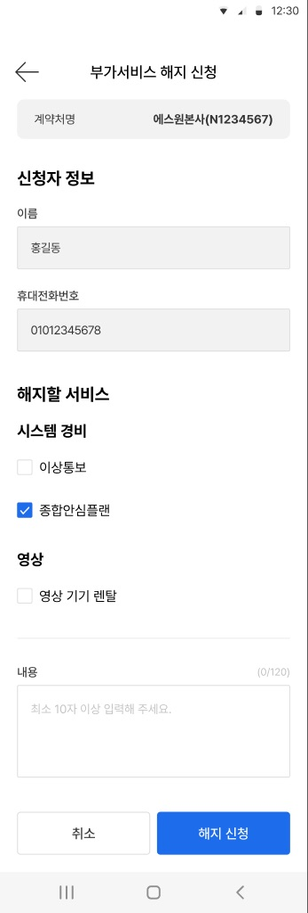
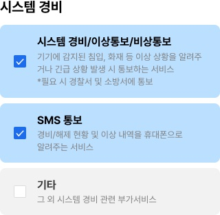
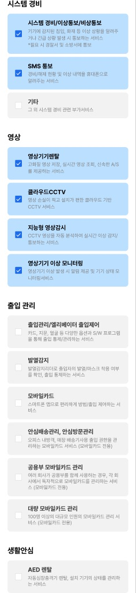
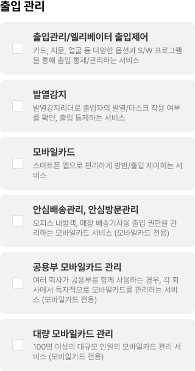

모두앱 부가서비스 — 맥락 리포트
한눈에 보기
부가서비스 화면 8개를 사용자가 하려는 일 4가지로 나눴어요. 마이에스원 › 계약정보 안의 칩 하나에서 시작해요.
계약정보 › 부가서비스 메인이용 중 / 없음
신규 신청
1단계 고르기
→2단계 적기
→접수 뒤 화면 없음
해지 >
해지 신청
→접수 뒤 화면 없음
신청 이력
목록 / 없음
→상세
→목록으로
| 맥락 | 화면 | 부품 | 다르게 만든 곳 |
|---|---|---|---|
| 이용 중인 부가서비스 확인 | 2 | 9 | 1 |
| 새 부가서비스 신청 | 2 | 7 | 2 |
| 부가서비스 해지 신청 | 1 | 7 | 2 |
| 신청 이력 보기 | 3 | 6 | 3 |
맥락을 가로지르는 규칙
- 신청도 해지도 '바로 반영'이 아니라 '요청 접수'
고르기 화면 안내는 '전화 상담을 통해 자세히 안내', 상세 처리상태는 '고객센터에 전달하였습니다', 메인은 '반영 중'. 앱은 요청서를 넣는 창구 역할만 한다. 추정(세 화면 글을 견주어 찾음) - 누가·어느 계약처인지는 앱이 미리 채운다
계약처명·이름·휴대전화번호는 회색 읽기 전용 칸. 사용자가 적는 것은 '무엇을' 고르기와 '내용' 한 칸뿐. 그림 확인 - 서비스는 늘 사업 영역별로 묶는다
메인·해지·신청 모두 시스템 경비 / 영상 / 출입 관리 / 생활안심 제목 아래에 서비스를 놓는다. 그림 확인 - 아래 버튼은 보조(흰) 왼쪽 + 주(파랑) 오른쪽, 화면 맨 아래 고정
신청 이력·신규 신청 / 취소·다음 / 취소·확인 / 취소·해지 신청. 하나일 때(목록)는 파랑 한 개. 그림 확인 - 적는 칸은 하나, 최소 10자 · 최대 120자
신청·해지 모두 같은 내용 상자와 같은 자리표시 글. 그림 확인
이용 중인 부가서비스 확인
우리 계약처가 지금 어떤 부가서비스를 쓰는지 본다
들어오기
- 계약정보 화면 › 위 칩 '부가서비스'
- 계약처가 여럿이면 콤보박스로 바꾸기
나가기
- 신규 신청 · 해지 > · 신청 이력
- 뒤로가기
쓰는 부품
앱바(뒤로가기 + 가운데 제목)계약처 고르기 콤보박스계약정보 칩 줄(가로 스크롤)요약 상자(건수 + 바로가기)주의 안내 줄(빨간 ! + 글)영역 제목(시스템 경비 · 영상 · 출입 관리 · 생활안심)서비스 이름 목록(글만)빈 화면(생각하는 얼굴 그림 + 안내 글)아래 버튼 칸(보조 흰 + 주 파랑 / 하나만)
어디에 어떻게 놓이나
- 맨 위: 앱바(계약정보) → 계약처 콤보박스 → 칩 줄
- 가운데: 요약 상자(N건 · 해지 >) → 반영 중 안내 → 영역별 서비스 이름
- 맨 아래 고정: 신청 이력(흰) · 신규 신청(파랑)
같은 일인데 다르게 만든 곳
- 이용 중이 없으면 요약 상자와 해지 바로가기가 통째로 사라지고 그림 + 안내만 남음 (34691:81559)
새 부가서비스 신청
필요한 부가서비스를 골라 상담 요청을 넣는다
들어오기
- 메인 '신규 신청'
나가기
- '확인' → (접수 뒤 화면 없음)
- '취소' · 뒤로가기
쓰는 부품
앱바(뒤로가기 + 가운데 제목)영역 제목(시스템 경비 · 영상 · 출입 관리 · 생활안심)체크 카드(체크박스 + 이름 + 설명)요약 상자(건수 + 바로가기)읽기 전용 입력칸(이름 + 회색 칸)내용 입력 상자(글자 수 0/120)아래 버튼 칸(보조 흰 + 주 파랑 / 하나만)
어디에 어떻게 놓이나
- 1단계: 안내 2줄 → 영역 4개 × 체크 카드 14장(긴 스크롤) → 취소 · 다음
- 2단계: 계약처명 상자 → 신청자 정보(읽기 전용) → 부가서비스(고른 것, 읽기 전용) → 내용 → 취소 · 확인
같은 일인데 다르게 만든 곳
- 1단계에는 계약처명 상자가 없고 2단계에만 있음 — 어느 계약처에 신청하는지 고르는 동안 안 보임 (34691:81861 · 34691:81792)
- 마지막 버튼이 '확인' — 해지는 '해지 신청'으로 무엇을 하는지 적혀 있음 (34691:81792 · 34691:81748)
부가서비스 해지 신청
쓰고 있는 부가서비스 중 일부를 그만두겠다고 요청한다

34691:81748
들어오기
- 메인 요약 상자 '해지 >'
나가기
- '해지 신청' → (접수 뒤 화면 없음)
- '취소' · 뒤로가기
쓰는 부품
앱바(뒤로가기 + 가운데 제목)요약 상자(건수 + 바로가기)읽기 전용 입력칸(이름 + 회색 칸)영역 제목(시스템 경비 · 영상 · 출입 관리 · 생활안심)체크 줄(체크박스 + 이름)내용 입력 상자(글자 수 0/120)아래 버튼 칸(보조 흰 + 주 파랑 / 하나만)
어디에 어떻게 놓이나
- 계약처명 상자 → 신청자 정보(읽기 전용) → 해지할 서비스(영역별 체크 줄) → 구분선 → 내용 → 취소 · 해지 신청
- 한 화면에 다 있음(신청처럼 단계를 나누지 않음)
같은 일인데 다르게 만든 곳
- 서비스를 고르는 모양이 신청은 설명 붙은 큰 카드, 해지는 설명 없는 한 줄 체크 (34691:81861 · 34691:81748)
- 신청은 2단계(고르기 → 적기), 해지는 1단계(고르기 + 적기 한 화면) (34691:81861 · 34691:81792 · 34691:81748)
신청 이력 보기
내가 넣은 신청·해지 요청이 어디까지 처리됐는지 본다
들어오기
- 메인 '신청 이력'
나가기
- 상세 '목록' → 목록
- 뒤로가기
쓰는 부품
앱바(뒤로가기 + 가운데 제목)건수 글('총 30건')신청내역 줄(구분 꼬리표 · 이름 · 날짜 · 상태 · >)빈 화면(생각하는 얼굴 그림 + 안내 글)이름–값 쌍(작은 회색 이름 + 굵은 값)아래 버튼 칸(보조 흰 + 주 파랑 / 하나만)
어디에 어떻게 놓이나
- 목록: 총 N건 → 줄마다 [꼬리표] 이름 / 날짜 · 오른쪽 상태 >
- 상세: 신청자 정보 → 부가서비스 신청 정보(구분·서비스·신청일자·접수번호·내용·처리상태) → 목록 버튼
같은 일인데 다르게 만든 곳
- '신청'이라는 말이 구분(신청/해지)과 처리 상태(신청/접수/완료)에 둘 다 쓰임 — 상세에서 '구분 신청 · 처리상태 신청'으로 겹쳐 보임 (34691:81591 · 34691:81821)
- 목록 화면에는 아래 버튼이 없고 상세에는 '목록' 버튼이 있음 — 뒤로가기와 같은 일 (34691:81591 · 34691:81821)
- 빈 화면 안내가 메인은 2줄(신청 유도 포함), 목록은 1줄(유도 없음) · 목록 빈 화면에는 신규 신청으로 가는 버튼도 없음 (34691:81559 · 34691:81728)
신청할 수 있는 서비스 14개
신규 신청 1단계 화면의 카드를 크게 잘라 본 것이에요. 시안에서는 시스템 경비 2개와 영상 4개가 고른 상태예요.



| 영역 | 서비스 |
|---|---|
| 시스템 경비 | 시스템 경비/이상통보/비상통보 · SMS 통보 · 기타 |
| 영상 | 영상기기렌탈 · 클라우드CCTV · 지능형 영상감시 · 영상기기 이상 모니터링 |
| 출입 관리 | 출입관리/엘리베이터 출입제어 · 발열감지 · 모바일카드 · 안심배송관리, 안심방문관리 (모바일카드 전용) · 공용부 모바일카드 관리 (모바일카드 전용) · 대량 모바일카드 관리 (모바일카드 전용) |
| 생활안심 | AED 렌탈 |
카드 서비스와 이어짐: 모바일카드는 부가서비스 가입이 필요하고, 방문자카드는 모바일카드 + 안심방문관리 가입이 필수예요(담당자 답변 2026-05-27).
확인이 필요한 것 14개
- 프레임 번호가 _2부터 시작 — '_1'(반영 중 안내가 없는 평소 메인)이 이 구역에 없음 (34691:81524)
- 신청·해지를 누른 뒤 접수 완료 화면(또는 알림)이 없음 — 어디로 돌아가는지 모름 (34691:81792 · 34691:81748)
- 해지 건의 상세 화면이 없음 — 상세는 '구분: 신청' 예시 하나뿐 (34691:81821)
- 처리 상태 신청 → 접수 → 완료의 뜻과, 접수 전에 취소할 수 있는지 (34691:81591)
- '반영 중'일 때 신규 신청·해지를 또 할 수 있는지 (34691:81524)
- 1단계 목록에서 이미 이용 중인 서비스가 어떻게 보이는지(고를 수 없게? 표시?) — 시안은 고른 상태만 있음 (34691:81861)
- '(모바일카드 전용)' 서비스 3개를 모바일카드 없이 고를 때의 규칙 — 막는지, 안내하는지 (34691:81861)
- 서비스 이름이 화면마다 다름: 고르기 '시스템 경비/이상통보/비상통보' ↔ 메인·해지 '이상통보', '영상기기렌탈' ↔ '영상 기기 렌탈', 메인의 '종합안심플랜'은 고르기 목록에 없음 (34691:81861 · 34691:81524 · 34691:81748)
- 예시 글이 고르기 목록에 없는 이름: 2단계 '영상기기 관리, 식당관리', 목록·상세 '설비연동(및 제어)' — 더미인지 다른 상품인지 (34691:81792 · 34691:81591 · 34691:81821)
- 내용 칸이 꼭 적어야 하는지, 10자 안 되면 어떤 안내가 뜨는지 (34691:81792 · 34691:81748)
- 신청내역 '총 30건'인데 10줄만 — 더 불러오는 방식(스크롤로 더 보기?) (34691:81591)
- 이 화면을 누가 쓸 수 있는지 — '계약' 권한 관리자만? 마스터관리자만?
- 계약정보 칩 줄의 왼쪽 숨은 칩 이름(…요금 앞 3개) (34691:81524)
- '반영 중' 안내가 빨간 오류 색 — 오류가 아니라 진행 중 안내인데 같은 색을 써도 되는지 (34691:81524)
Figma 이름과 실제 화면이 다른 곳 6개
| 화면 | 무엇 | Figma | 실제 |
|---|---|---|---|
| 34691:81792 | 섹션 제목 | 레이어 '서비스약관에 동의해 주세요' | '부가서비스 정보' |
| 34691:81861 | 맨 위 안내 글 | 레이어 '서비스약관에 동의해 주세요' | '부가서비스를 선택하신 후 신청해 주시면 전화 상담을 통해 자세히 안내 드립니다.' |
| 34691:81748 · 34691:81792 | 맨 위 회색 상자 | 레이어 '총 3개의 서비스를 이용하고 계세요' | '계약처명 · 에스원본사(N1234567)' |
| 34691:81524 | 요약 상자 글 | 레이어 '총 3개의 서비스를 이용하고 계세요' | '이용중인 부가서비스 3건 · 해지 >' |
| 모든 화면 | 맨 아래 띠 | 'phone_navi' | 기기 내비게이션 바(｜｜｜ ○ ＜) — 앱 탭바 아님 |
| 34691:81591 | 줄 구분 꼬리표 레이어 | 'Frame 297' / 세 번째 줄만 'Frame 298' | 모두 같은 꼬리표(해지/신청) |
화면 8개
34691:81524
34691:81559
34691:81591
34691:81728
34691:81821
34691:81748
34691:81861
34691:81792
| 화면 | 무엇을 보여주나 |
|---|---|
| 계약정보 › 부가서비스 (이용 중 · 반영 중) 5.5 부가서비스_2 메인(변경정보 반영중) | 계약처를 고르고, 위 칩에서 '부가서비스'를 누르면 이용 중인 부가서비스를 사업 영역별로 보여준다. 변경 신청 뒤에는 빨간 글씨로 '변경된 정보를 반영 중입니다.'가 뜬다. |
| 계약정보 › 부가서비스 (이용 중 없음) 5.5 부가서비스_3 메인(없음) | 이용 중인 부가서비스가 없을 때. 생각하는 얼굴 그림과 '현재 이용중인 부가서비스가 없습니다. 신청 후 다양한 서비스를 이용해 보세요.'를 보여주고, 아래 두 버튼은 그대로 둔다. |
| 부가서비스 신청내역 (목록) 5.5 부가서비스_4 신청내역 | 지금까지의 신청·해지 접수 목록. '총 30건' 아래 줄마다 구분 꼬리표(해지 회색 / 신청 파랑), 서비스 이름('설비연동 외 1건'), 날짜, 오른쪽에 처리 상태(신청·접수·완료) + > 가 있다. |
| 부가서비스 신청내역 (없음) 5.5 부가서비스_5 신청내역(없음) | 신청 내역이 없을 때. 같은 그림과 '부가서비스 신청 내역이 없습니다.' 한 줄. 다른 버튼은 없다. |
| 부가서비스 신청내역 확인 (상세) 5.5 부가서비스_6 신청내역 확인 | 신청 한 건의 상세. 신청자 정보(이름·휴대전화번호)와 부가서비스 신청 정보(구분·신규 신청 부가서비스·신청일자·접수번호·내용·처리상태)를 이름–값 쌍으로 보여주고, 아래 '목록' 버튼 하나. |
| 부가서비스 해지 신청 5.5 부가서비스_7 해지 신청 | 이용 중인 부가서비스 중 해지할 것을 체크하고, 내용(최소 10자·최대 120자)을 적어 '해지 신청'을 누른다. 계약처명과 신청자 정보는 미리 채워져 있고 고칠 수 없다(회색 칸). |
| 부가서비스 신규 신청 1단계 (서비스 고르기) 5.5 부가서비스_8 신규 신청(상품 선택) | 맨 위 안내 '부가서비스를 선택하신 후 신청해 주시면 전화 상담을 통해 자세히 안내 드립니다.' 아래로 4개 영역(시스템 경비 3 · 영상 4 · 출입 관리 6 · 생활안심 1) 14개 서비스를 체크 카드로 고른다. 카드마다 이름 + 설명 2~3줄. 고른 카드는 하늘색 바탕 + 파란 체크. 아래 '취소 · 다음'. |
| 부가서비스 신규 신청 2단계 (내용 적기) 5.5 부가서비스_9 신규 신청(정보 입력) | 고른 서비스가 '부가서비스' 칸에 읽기 전용으로 모여 보이고(예시 '영상기기 관리, 식당관리'), 내용(최소 10자·최대 120자)을 적어 '확인'을 누른다. 계약처명·신청자 정보는 해지 신청과 같은 모양. |